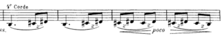

La pequeña suite para dos pianos fue compuesta entre los años 1888 y 89. En este período, Debussy estaba componiendo la fantasía para piano y orquesta (1889-90). En 1907, Büsser orquestó la suite que vamos a analizar. Como podemos comprobar, y según (Gérald Hugon, 2012) todos los movimientos tienen la forma ABA, que junto con un título sugerente indican un tipo de movimiento o de danza.
En Bateau (en barco) presenta con ritmo de barcarola una suave melodía en la flauta. El acompañamiento de las cuerdas con sordina recuerda al movimiento de las olas. La sección B es más contrastante, con cambio de dinámicas y de ritmos con puntillo.

El segundo movimiento, Cortège presenta un carácter más alegre, con la melodía principal en las flautas y los oboes, mientras la cuerda acompaña en pizzicato. La sección B es un tema sincopado. La vuelta al tema inicial se realiza superponiendo elementos de la sección B.
El minueto comienza con una breve introducción, el tema inicial tiene carácter modal y la sección central contrasta tanto en ritmo como en carácter (grazioso). La vuelta al tema inicial, se hace introduciendo algunos de los elementos que se han escuchado en la sección B.
El ballet utiliza un tema modal inicial sobre una pedal de dominante, sin embargo, la sección central es un vals en compás de 3/8. La vuelta al tema inicial combina en su final el regreso al compás de 3/8 para combinar los temas de ambas secciones.
Dificultades para violín I en la obra
El primer movimiento, en bateau, presenta como dificultad la métrica, la combinación de ritmos en tiempo ternario con dosillos. En algunas secciones, el compositor exige el uso de una cuerda en concreto del violín para interpretar el pasaje, por el color más oscuro de la IV cuerda. Como ejemplo tenemos los siguientes compases:

Los golpes de arco de la sección B presentan la dificultad de combinar el legato con el spicatto de forma contínua, como por ejemplo los siguientes compases:
Finalmente, la siguiente sección en pianísimo presenta la dificultad del golpe de arco con el matíz y la dificultad de la posición en la mano izquierda:
El segundo movimiento, Cortège, presenta diversas dificultades, por un lado, la velocidad y la combinación del spicatto en el tema principal:
Al final de la primera sección, la dificultad es en el cambio de posiciones:
Este motivo se repite varias veces con diferentes variaciones, que terminan la escala ascendente o descendentemente (en la sección A’).
En el minueto, el tema modal presenta la dificultad de las alteraciones descendentes, así como la melodía en el registro sobreagudo del instrumento.
Finalmente, en la sección B hay un pasaje de acompañamiento en tresillos de semicorchea que presenta la dificultad de la medición y la acentuación. Además este pasaje se ejecuta en divisi en los violines.
Finalmente, pasamos a comentar las dificultades técnicas del cuarto movimiento, ballet. Los violines primeros llevan una melodía muy rítmica e incisiva, su carácter se acentúa por pedir su ejecución en la IV cuerda, así como por los arcos que están escritos hacia abajo, para producir un acento.
El movimiento está lleno de dificultades técnicas, por ejemplo el paso de arco a pizzicato en una semicorchea,
En la sección B, tiempo de vals, tenemos otra exigencia de pasaje sobre la IV y la III cuerda, en este caso presenta la dificultad de la subida sobre la III cuerda.
En la sección A’, la recuperación del movimiento de vals, presenta un pasaje complejo, por las dobles cuerdas y por los saltos de posición hasta el sobre agudo